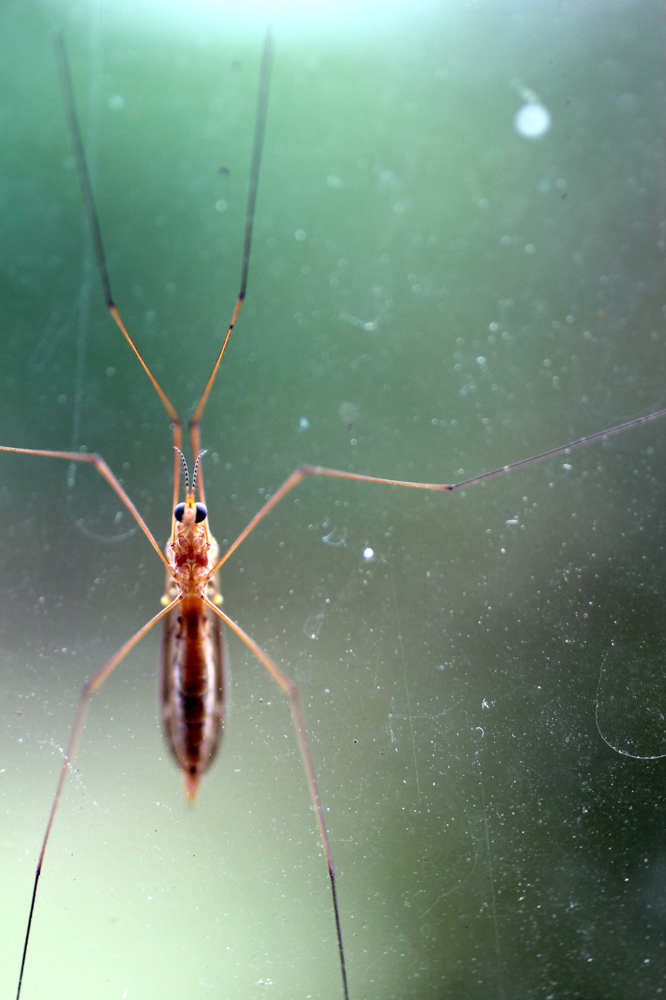
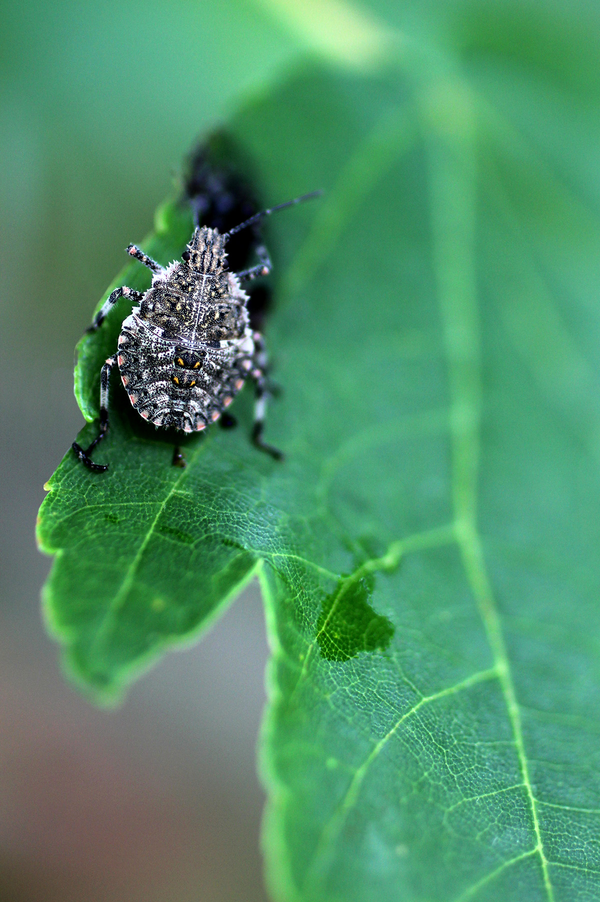
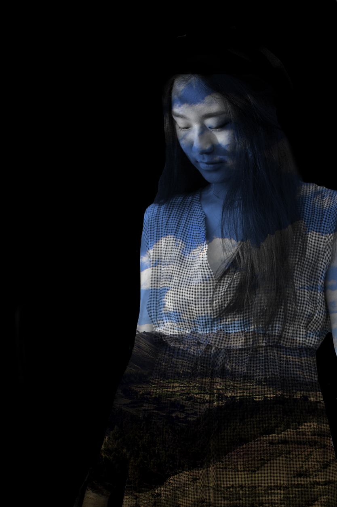
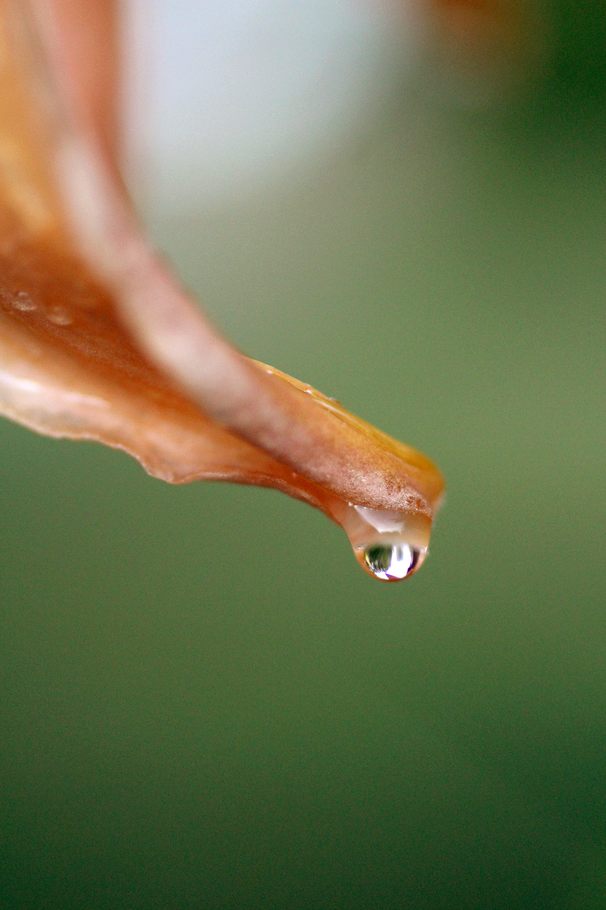

Amanda Grate


While growing up in Montgomery AL, wasn't the best for me, I was still able to find little pockets of beauty. The rich sunsets, vibrant colors, and unique moments made it a little less worse. None of these photos were staged except for the double exposure with the figure. The combination of her textured dress and background have created a fun and interesting composition.


blah